#install.packages("medicaldata")3-0. Medical dataset
통계학, 의학통계학 교육을 위한 medical data library “medicaldata”을 다운받아봅시다 (Higgins 2021).
https://higgi13425.github.io/medicaldata/
polyps 라는 데이터셋을 확인하실 수 있습니다. 이 데이터셋은 1993년 NEJM에 실린 연구로 familial adenomatous polyposis 치료를 위한 sulindac 약제의 효과를 보기 위한 RCT입니다(Giardiello et al. 1993).
library(medicaldata)
polyps participant_id sex age baseline treatment number3m number12m
1 001 female 17 7 sulindac 6 NA
2 002 female 20 77 placebo 67 63
3 003 male 16 7 sulindac 4 2
4 004 female 18 5 placebo 5 28
5 005 male 22 23 sulindac 16 17
6 006 female 13 35 placebo 31 61
7 007 female 23 11 sulindac 6 1
8 008 male 34 12 placebo 20 7
9 009 male 50 7 placebo 7 15
10 010 male 19 318 placebo 347 44
11 011 male 17 160 sulindac 142 25
12 012 female 23 8 sulindac 1 3
13 013 male 22 20 placebo 16 28
14 014 male 30 11 placebo 20 10
15 015 male 27 24 placebo 26 40
16 016 male 23 34 sulindac 27 33
17 017 female 22 54 placebo 45 46
18 018 male 13 16 sulindac 10 NA
19 019 male 34 30 placebo 30 50
20 020 female 23 10 sulindac 6 3
21 021 female 22 20 sulindac 5 1
22 022 male 42 12 sulindac 8 4코드북은 아래와 같습니다.
https://htmlpreview.github.io/?https://github.com/higgi13425/medicaldata/blob/master/man/description_docs/polyps_desc.html
| variable | position | label | units | codes | type |
|---|---|---|---|---|---|
| participant_id | 1 | Participant ID | character | ||
| sex | 2 | Sex | male, female | factor | |
| age | 3 | Age | years | numeric | |
| baseline | 4 | Number of polyps at baseline | numeric | ||
| treatment | 5 | treatment assigned | sulindac, placebo | factor | |
| number3m | 6 | number of polyps at 3 months | numeric | ||
| number12m | 7 | number of polyps at 12 months | numeric |
이 데이터셋을 활용해봅시다.
descriptive analysis에 유용한 DescTools 패키지를 깔아봅시다 (Andri et mult. al. 2022).
https://andrisignorell.github.io/DescTools/index.html
#install.packages("DescTools")library(DescTools)3-1. 대푯값(Representative value)
평균, 중앙값, 최빈치
평균, 중앙값, 최빈치를 구해보겠습니다. 평균과 중앙값은 기본 함수인 mean()과 median()을 사용합니다. 그런데 최빈치는 기본함수로는 없고 DescTools의 Mode() 함수를 사용합니다.
my_num <- c(1,2,3,4,5,5)
mean(my_num)[1] 3.333333median(my_num)[1] 3.5Mode(my_num)[1] 5
attr(,"freq")
[1] 2polyps 데이터의 baseline 변수는 환자들이 baseline 당시에 갖고 있던 폴립의 수입니다. 이 변수의 평균, 중앙값, 최빈치를 구해봅시다.
mean(polyps$baseline)[1] 40.95455median(polyps$baseline)[1] 18Mode(polyps$baseline)[1] 7
attr(,"freq")
[1] 3환자들은 sulindac을 복용한 treatment 군, placebo를 복용한 reference군으로 나뉩니다.
각 군의 baseline 변수의 평균, 중앙값, 최빈치값을 구해봅시다.
library(dplyr)
Attaching package: 'dplyr'The following objects are masked from 'package:stats':
filter, lagThe following objects are masked from 'package:base':
intersect, setdiff, setequal, union#sulindac
sulindac_df <- filter(polyps, treatment == "sulindac")
mean(sulindac_df$baseline)[1] 28median(sulindac_df$baseline)[1] 12Mode(sulindac_df$baseline)[1] 7
attr(,"freq")
[1] 2#placebo군에 대해서는 직접 해보세요.이번엔 평균을 직접 구현해 봅시다. 아래 공식을 사용합니다.
\[ \bar{x}={\sum_{i=1}^n x_i \over n} \]
sum(sulindac_df$baseline)/nrow(sulindac_df) # sum() 함수 사용[1] 28분산, 표준편차
분산은 var(), 표준편차는 sd()로 구합니다. sulindac 그룹의 baseline 변수의 분산과 표준편차를 구해봅시다.
var(sulindac_df$baseline)[1] 1984.4sd(sulindac_df$baseline)[1] 44.5466이번엔 평균과 표준편차를 함께 봅시다. 그리고 논문과 비교해봅니다.
mean(sulindac_df$baseline)[1] 28sd(sulindac_df$baseline)[1] 44.5466
총 환자 수는 22명, sulindac group에는 11명이 있는 것을 볼 수 있습니다. Base-line no. of polyps를 보시면 28.0+-44.5로 나오는 것을 볼 수 있습니다.
mean(sulindac_df$age)[1] 21.90909sd(sulindac_df$age)[1] 7.555853소수점이 기니 반올림을 해주는 round()함수를 써봅니다. Table과 값이 동일한 것을 확인합니다.
placebo group에 대해서도 구해보세요.
round(mean(sulindac_df$age), 1) #소수점 첫째 자리를 위해 옵션에 1을 넣음[1] 21.9round(sd(sulindac_df$age), 1)[1] 7.6round() 함수에 대해
잠깐 딴 얘기를 해야합니다. 반올림을 해주는 round()는 우리가 수학시간에 배운 반올림법과 다릅니다. 차이는 .5를 반올림을 할 때 벌어집니다.
round(0.5)[1] 0round(1.5)[1] 2round(2.5)[1] 2round(3.5)[1] 4round(4.5)[1] 4round(5.5)[1] 6우리의 예상과 다릅니다. R에서 기본으로 제공하는 round()의 규칙은 .5일 경우 가장 가까운 짝수로 값을 반환한다. 입니다. 이것은 컴퓨터공학에서의 반올림 규칙입니다. python3에서도 같은 결과를 확인할 수 있습니다. 경험상 빅데이터를 분석할 경우 .5로 딱 나오면서 반올림을 하여 표현해야 경우는 드물기 때문에 round()를 써도 무방합니다. 그런데 값 중에 0.5가 있을 것으로 예상되고 꼭 반올림을 해야 하는 경우엔 다른 함수를 써야 합니다.
#https://stackoverflow.com/questions/12688717/round-up-from-5
round2 = function(x, digits=0) {
posneg = sign(x)
z = abs(x)*10^digits
z = z + 0.5 + sqrt(.Machine$double.eps)
z = trunc(z)
z = z/10^digits
z*posneg
}
round2(0.5)[1] 1round2(1.5)[1] 2round2(2.5)[1] 3round2(3.5)[1] 4round2(4.5)[1] 5round2(5.5)[1] 6다시 분산과 표준편차의 예제로 돌아옵시다. 그런데 우리는 모분산의 공식과 표본분산의 식이 서로 다른 것을 확인하였습니다. 둘 중 어떤걸 써야 할까요? 우리가 접하는 데이터들은 어떠한 모집단으로부터 나온 표본들이니 표본 분산으로 구해야 합니다. var()와 sd()가 그러면 표본분산, 표본표준편차의 식으로 되어 있을까요? 어떤 함수의 설명을 보고 싶으면 ?var와 같이 앞에 물음표를 사용하면 됩니다. 패키지에 대해 궁금하면 ??를 사용합니다. ?var로 설명을 확인해보면 중간에
The denominator n - 1 is used which gives an unbiased estimator of the (co)variance for i.i.d. observations.
라고 나오는 것을 확인할 수 있습니다. 모분산의 공식이 아닌 표본분산의 공식을 따릅니다.
이번엔 모분산, 표본분산의 공식을 직접 구현하여 baseline 변수의 분산을 구해봅시다.
\[ \bar{x}={\sum_{i=1}^n x_i \over n} \\ s_x^2 = {\sum_{i=1}^n(x_i-\bar{x})^2 \over n-1} \\ \sigma^2 = {\sum_{i=1}^n(x_i-\mu)^2 \over n} \]
mean_baseline <- sum(sulindac_df$baseline)/nrow(sulindac_df)
sample_var <- sum((sulindac_df$baseline - mean_baseline)^2)/(nrow(sulindac_df) - 1)
pop_var <- sum((sulindac_df$baseline - mean_baseline)^2)/nrow(sulindac_df)
print(paste0("내가 구한 표본분산: ", sample_var, "; 모분산: ", pop_var,"; var():", var(sulindac_df$baseline)))[1] "내가 구한 표본분산: 1984.4; 모분산: 1804; var():1984.4"sqrt(sample_var) # SD를 구하기 위해 sqrt()로 루트함[1] 44.5466Desc()와 mytable()로 descriptive analysis하기
DescTools 라이브러리의 Desc()와 moonBook 라이브러리의 mytable() 함수를 사용하면 원하는 변수의 descriptive analysis를 쉽게 수행할 수 있습니다.
예를 들어, polyps 데이터 프레임을 그대로 사용해봅시다. 그러면 7개의 변수에 대해 형태를 알아서 파악해 그에 대한 기초통계량을 보여줍니다. figure도 제공해줍니다.
Desc(polyps)------------------------------------------------------------------------------
Describe polyps (data.frame):
data frame: 22 obs. of 7 variables
20 complete cases (90.9%)
Nr ColName Class NAs Levels
1 participant_id character .
2 sex factor . (2): 1-female, 2-male
3 age numeric .
4 baseline integer .
5 treatment factor . (2): 1-placebo, 2-sulindac
6 number3m integer .
7 number12m numeric 2 (9.1%)
------------------------------------------------------------------------------
1 - participant_id (character)
length n NAs unique levels dupes
22 22 0 22 22 n
100.0% 0.0%
level freq perc cumfreq cumperc
1 001 1 4.5% 1 4.5%
2 002 1 4.5% 2 9.1%
3 003 1 4.5% 3 13.6%
4 004 1 4.5% 4 18.2%
5 005 1 4.5% 5 22.7%
6 006 1 4.5% 6 27.3%
7 007 1 4.5% 7 31.8%
8 008 1 4.5% 8 36.4%
9 009 1 4.5% 9 40.9%
10 010 1 4.5% 10 45.5%
11 011 1 4.5% 11 50.0%
12 012 1 4.5% 12 54.5%
... etc.
[list output truncated]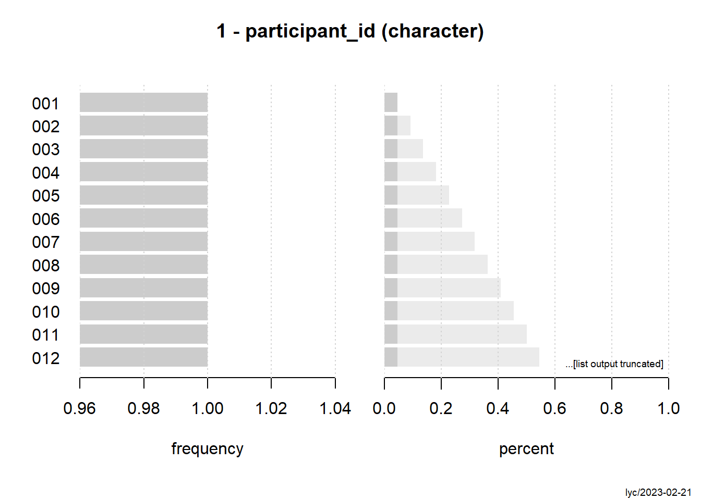
------------------------------------------------------------------------------
2 - sex (factor - dichotomous)
length n NAs unique
22 22 0 2
100.0% 0.0%
freq perc lci.95 uci.95'
female 9 40.9% 23.3% 61.3%
male 13 59.1% 38.7% 76.7%
' 95%-CI (Wilson)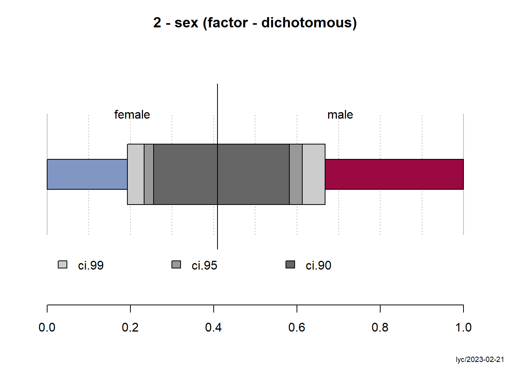
------------------------------------------------------------------------------
3 - age (numeric)
length n NAs unique 0s mean meanCI'
22 22 0 13 0 24.09 20.05
100.0% 0.0% 0.0% 28.13
.05 .10 .25 median .75 .90 .95
13.15 16.10 18.25 22.00 26.00 34.00 41.60
range sd vcoef mad IQR skew kurt
37.00 9.12 0.38 6.67 7.75 1.25 1.05
lowest : 13.0 (2), 16.0, 17.0 (2), 18.0, 19.0
highest: 27.0, 30.0, 34.0 (2), 42.0, 50.0
heap(?): remarkable frequency (18.2%) for the mode(s) (= 22, 23)
' 95%-CI (classic)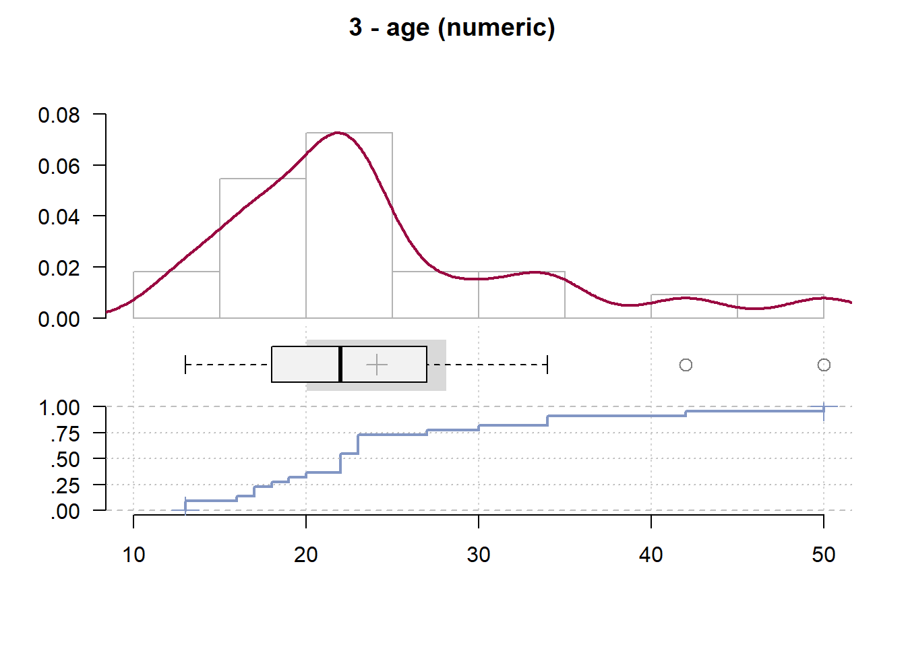
------------------------------------------------------------------------------
4 - baseline (integer)
length n NAs unique 0s mean meanCI'
22 22 0 17 0 40.95 9.61
100.0% 0.0% 0.0% 72.30
.05 .10 .25 median .75 .90 .95
7.00 7.00 10.25 18.00 33.00 74.70 155.85
range sd vcoef mad IQR skew kurt
313.00 70.70 1.73 15.57 22.75 2.91 8.11
lowest : 5, 7 (3), 8, 10, 11 (2)
highest: 35, 54, 77, 160, 318
' 95%-CI (classic)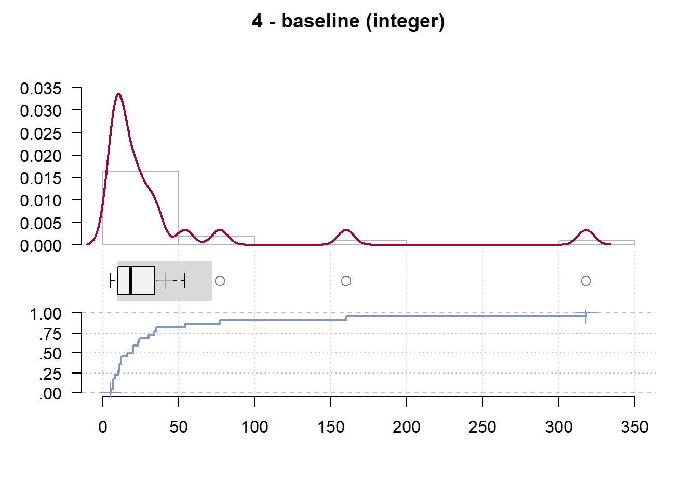
------------------------------------------------------------------------------
5 - treatment (factor - dichotomous)
length n NAs unique
22 22 0 2
100.0% 0.0%
freq perc lci.95 uci.95'
placebo 11 50.0% 30.7% 69.3%
sulindac 11 50.0% 30.7% 69.3%
' 95%-CI (Wilson)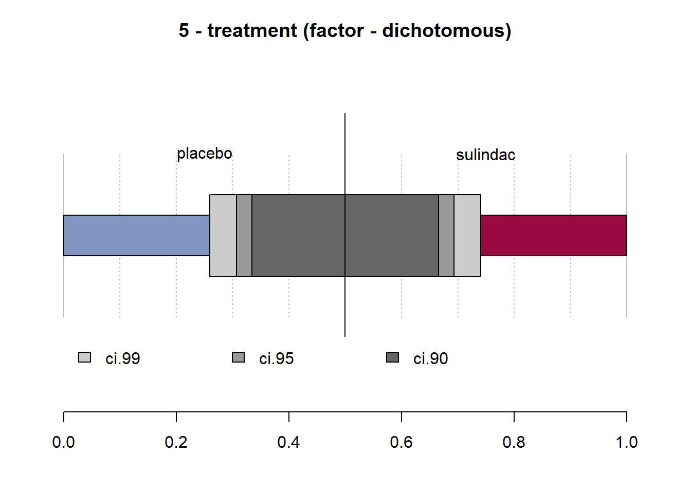
------------------------------------------------------------------------------
6 - number3m (integer)
length n NAs unique 0s mean meanCI'
22 22 0 17 0 38.41 4.95
100.0% 0.0% 0.0% 71.87
.05 .10 .25 median .75 .90 .95
4.05 5.00 6.00 16.00 29.25 64.80 138.25
range sd vcoef mad IQR skew kurt
346.00 75.47 1.96 15.57 23.25 3.19 9.89
lowest : 1, 4, 5 (2), 6 (3), 7
highest: 31, 45, 67, 142, 347
' 95%-CI (classic)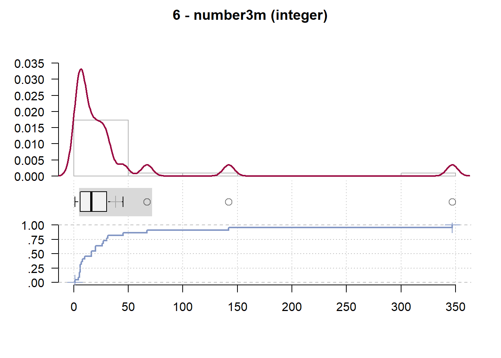
------------------------------------------------------------------------------
7 - number12m (numeric)
length n NAs unique 0s mean meanCI'
22 20 2 17 0 24.05 14.29
90.9% 9.1% 0.0% 33.81
.05 .10 .25 median .75 .90 .95
1.00 1.90 3.75 21.00 41.00 51.10 61.10
range sd vcoef mad IQR skew kurt
62.00 20.85 0.87 26.69 37.25 0.44 -1.26
lowest : 1.0 (2), 2.0, 3.0 (2), 4.0, 7.0
highest: 44.0, 46.0, 50.0, 61.0, 63.0
' 95%-CI (classic)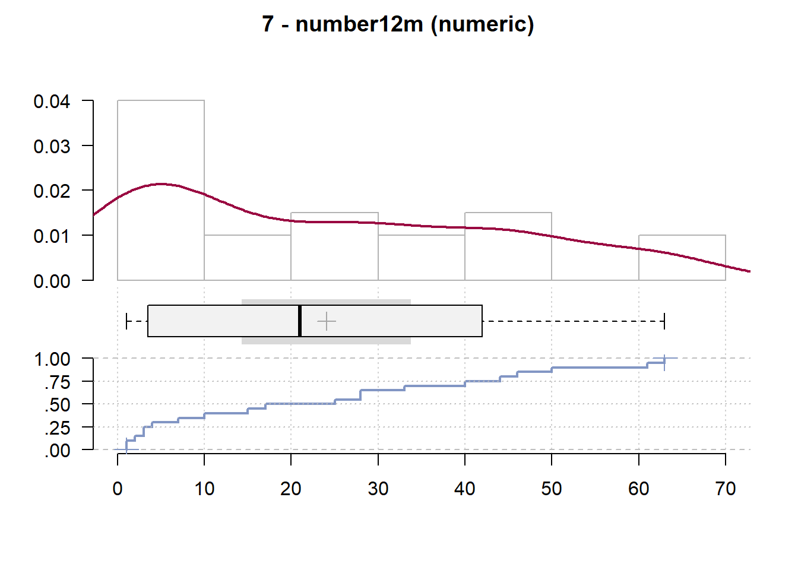
moonBook 라이브러리는 가톨릭대 성빈센트병원 순환기내과 문건웅 교수님께서 만드셨습니다. 의학 연구에 사용하는 통계적 지표들을 쉽게 논문에 맞는 형식으로 변환할 수 있도록 도와줍니다. 저는 mytable()과 extractOR(), extractHR() 함수를 즐겨씁니다. mytable() 함수는 특정 변수를 기준으로 원하는 변수에 대한 기초통계량을 제공합니다. 임상연구에서 Table 1과 비슷합니다.
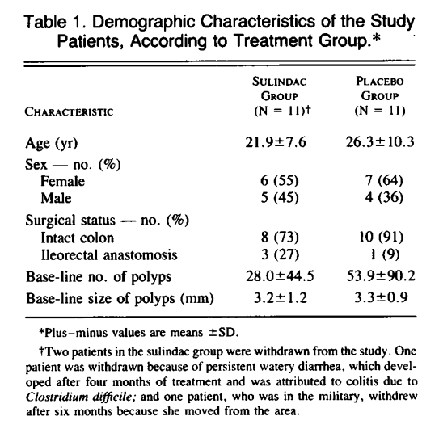
위와 같이 만든다고 했을 때 treatment 변수를 기준으로 age, sex, baseline 변수의 통계량을 뽑아볼 수 있겠네요. 이를 R의 formula로 표현하면 물결(~)을 사용해서 treatment ~ age + sex + baseline 이렇게 합니다.
library(moonBook)
mytable(treatment ~ age + sex + baseline, data=polyps)
Descriptive Statistics by 'treatment'
—————————————————————————————————————————
placebo sulindac p
(N=11) (N=11)
—————————————————————————————————————————
age 26.3 ± 10.3 21.9 ± 7.6 0.272
sex 1.000
- female 4 (36.4%) 5 (45.5%)
- male 7 (63.6%) 6 (54.5%)
baseline 53.9 ± 90.2 28.0 ± 44.5 0.407
————————————————————————————————————————— treatment와 placebo그룹의 각 변수의 통계분석을 알아서 시행해서 그에 대한 p-value도 제공해줍니다. 그런데 sex 변수를 보면 논문과 우리가 구한 수가 반대로 나오는 것을 볼 수 있습니다^^; 이 퍼블릭 데이터셋이 좀 잘못된 것 같습니다. 무시합시다.
3-2. Graph 그리기
R에서 그래프를 그리기 위한 라이브러리로 ggplot2와 plotly를 소개합니다. 설치가 안되었다면 둘 다 설치해봅니다.
#install.packages("ggplot2")
#install.packages("plotly")library(ggplot2)
library(plotly)
Attaching package: 'plotly'The following object is masked from 'package:ggplot2':
last_plotThe following object is masked from 'package:stats':
filterThe following object is masked from 'package:graphics':
layout둘 다 훌륭한 시각화 툴입니다. 경험상 ggplot2는 논문의 figure로 만들 때, plotly는 웹에 게시하거나 인터랙티브한 효과를 주고 싶을 때 유용한 것 같습니다.
ggplot2
scatter <- ggplot(data=iris, aes(x = Sepal.Length, y = Petal.Length)) + geom_point(aes(color=Species)) +
xlab("Sepal.Length") + ylab("Petal.Length")
scatter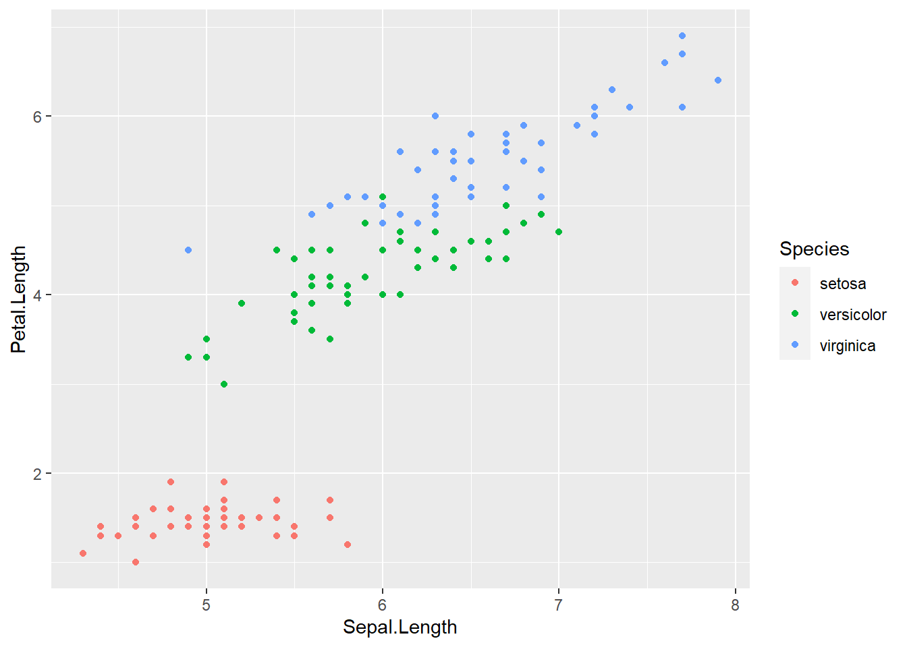
plotly
fig <- plot_ly(data = iris, x = ~Sepal.Length, y = ~Petal.Length, color = ~Species)
figNo trace type specified:
Based on info supplied, a 'scatter' trace seems appropriate.
Read more about this trace type -> https://plotly.com/r/reference/#scatterNo scatter mode specifed:
Setting the mode to markers
Read more about this attribute -> https://plotly.com/r/reference/#scatter-mode여기서는 ggplot2를 활용해 설명할 것입니다.
참고: 앤디 필드의d 유쾌한 R 통계학
그래프를 직접 손으로 그린다고 해봅시다. 먼저 무슨 그래프 그릴지를 생각하겠지요. 그리고 x축 y축 좌표계를 그릴 것이고 좌표계에 데이터를 점이나 선같은 형태로 출력할 것입니다. 이렇게 그래프를 그릴 때에 따져야할 여러 구조들을 layer라고 합니다. 포토샵이나 일러스트레이터에서 말하는 layer와도 의미가 비슷할 것입니다. 즉, ggplot2의 함수들을 이용해서 자신이 원하는 그래프의 필요한 각 레이어를 층층이 쌓으면 됩니다.
https://r-graph-gallery.com/
위 사이트도 정리가 잘 되어 있습니다.
Boxplot & Violin plot
저도 솔직히 그래프를 잘 그리는 편은 아닙니다. 제가 그래프를 그릴 땐 말을 하듯(?) 만듭니다. ggplot을 써서 polyps의 age 변수의 boxplot을 treatment 그룹별로 만들어봅시다. 예를 들어서, 이렇게 할 수 있습니다. data는 polyps를 쓸 건데 boxplot 을 그리고 싶어. x축에는 treatment 변수 y축에는 age가 들어가는 거지.
fig <- ggplot(data=polyps) +
geom_boxplot(aes(x=treatment, y=age))
fig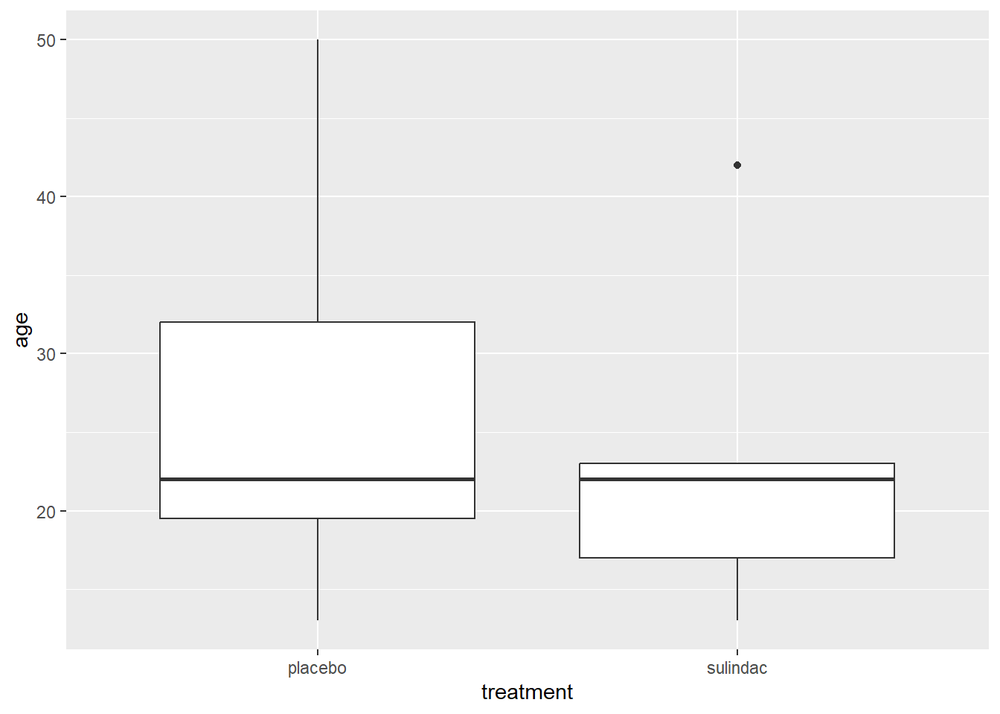
chatGPT를 쓴다면 어떻게 될까요?
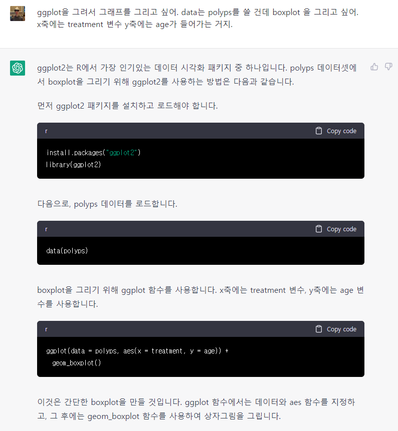
Violin plot은 geom_violin() 함수를 사용합니다.
fig <- ggplot(data=polyps) +
geom_violin(aes(x=treatment, y=age))
fig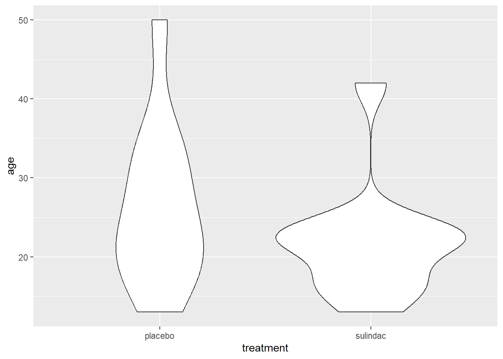
boxplot하고 겹치게 할 수도 있습니다. 이 때, aes() 함수안에 x축과 y축은 전역적(global)으로 되어야 하기 때문에 ggplot함수 안으로 들어갑니다.
fig <- ggplot(data=polyps, aes(x=treatment, y=age)) +
geom_violin() +
geom_boxplot()
fig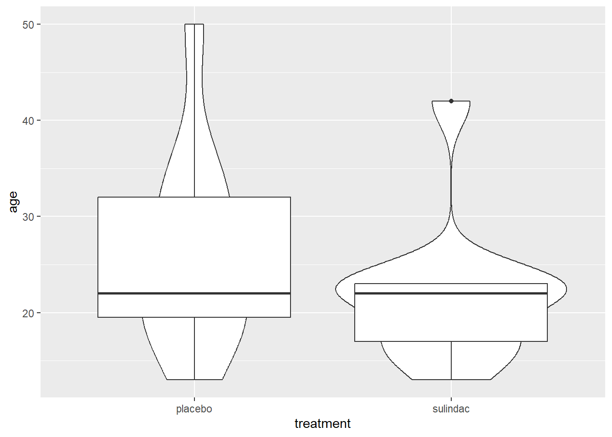
Histogram & Bar plot
Histogram은 연속형 변수에 bar plot은 주로 범주형 변수에 적용됩니다.
fig <- ggplot(data=polyps) +
geom_histogram(aes(x=age), bins= 10)
fig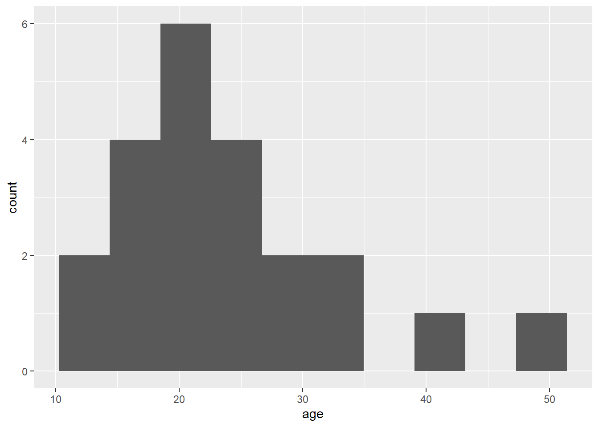
data는 polyps로 하고 bar plot을 그릴건데 x축에 sex로 해보자. 색을 넣고 싶으면 aes() 함수 안에 fill 옵션을 넣습니다.
fig <- ggplot(data=polyps) +
geom_bar(aes(x=sex, fill=sex))
fig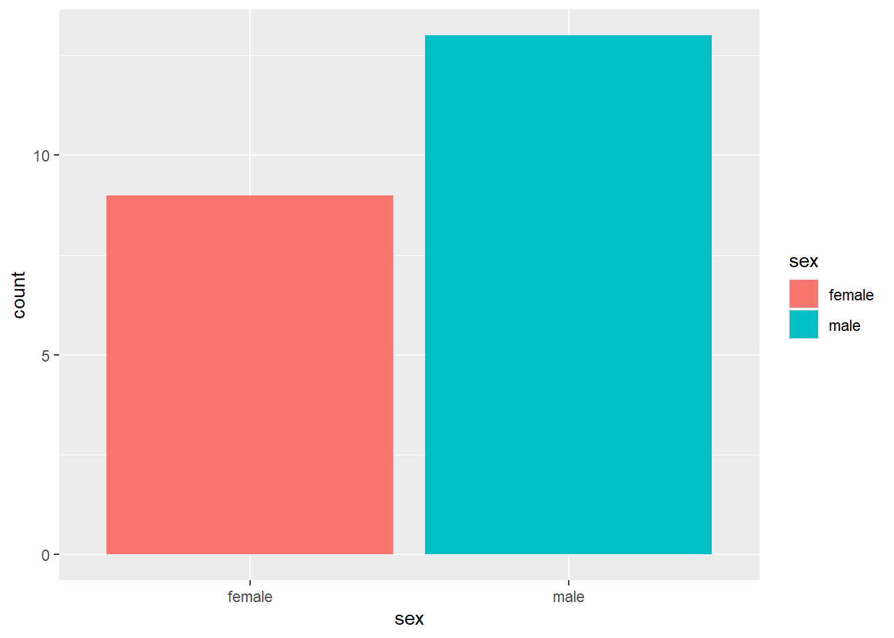
Pie chart
Pie chart는 bar graph에서 응용할 수 있습니다. 근데 성별 그룹의 수를 카운트해서 넣어줘야 합니다
num_sex <- data.frame(SEX=c("female", "male"), NUM=c(9, 13))
fig <- ggplot(data=num_sex, aes(x=NUM, y="", fill=SEX)) +
geom_bar(stat="identity") +
coord_polar() +
theme_void()
fig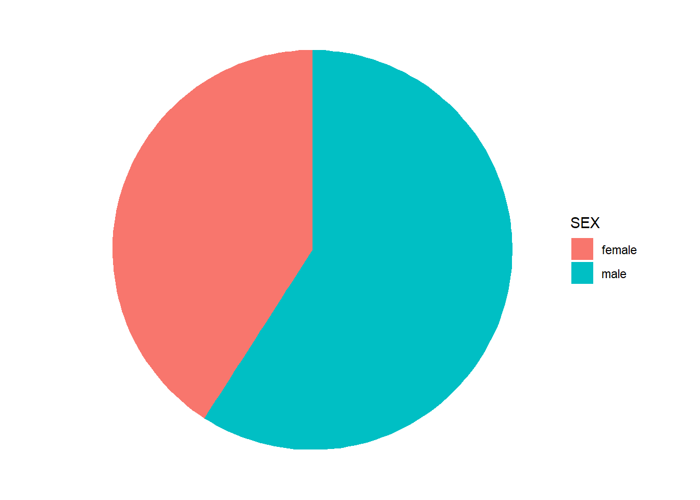
그룹의 비율이 비슷하면 어떨까요? Pie chart로 어느 그룹이 더 크거나 작은지 구분하기 힘듭니다. 그리고 앞서 본 왜곡의 위험이 있어 파이차트는 지양하는 추세인 것 같습니다.
Scatter plot
x축, y축 모두 연속형 변수일 경우 각 데이터 포인트마다 점을 찍어 그리는 그래프입니다.
fig <- ggplot(data=polyps) +
geom_point(aes(x=baseline, y=number3m, color=treatment))
fig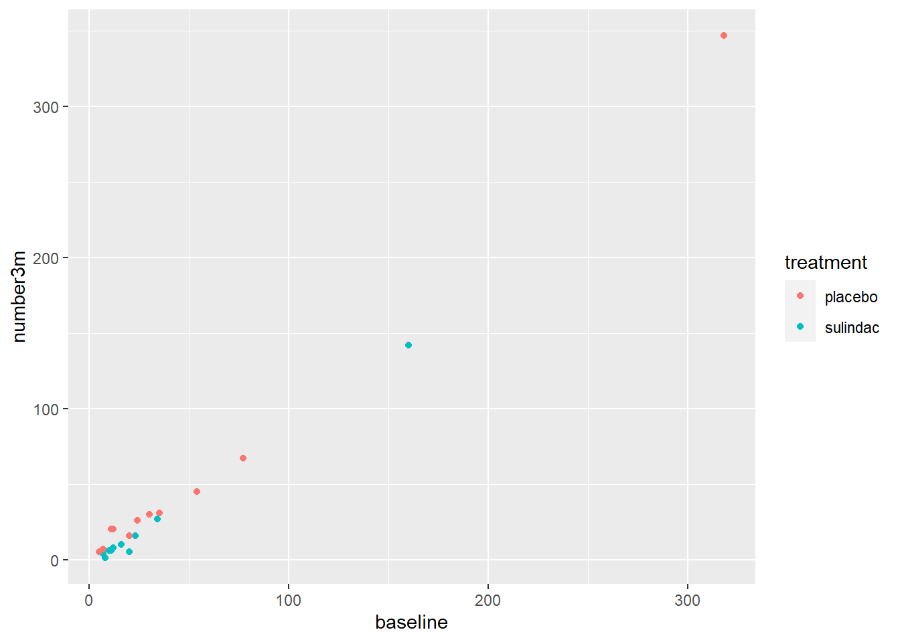
성균관대학교 삼성융합의과학원 의생명통계학 2023년 1학기 - 이영찬
References
Andri et mult. al., Signorell. 2022. “DescTools: Tools for Descriptive Statistics.” https://cran.r-project.org/package=DescTools.
Giardiello, Francis M., Stanley R. Hamilton, Anne J. Krush, Steven Piantadosi, Linda M. Hylind, Paul Celano, Susan V. Booker, C. Rahj Robinson, and G. Johan A. Offerhaus. 1993. “Treatment of Colonic and Rectal Adenomas with Sulindac in Familial Adenomatous Polyposis.” New England Journal of Medicine 328 (18): 1313–16. https://doi.org/10.1056/nejm199305063281805.
Higgins, Peter. 2021. “Medicaldata: Data Package for Medical Datasets.” https://CRAN.R-project.org/package=medicaldata.